Kings Canyon
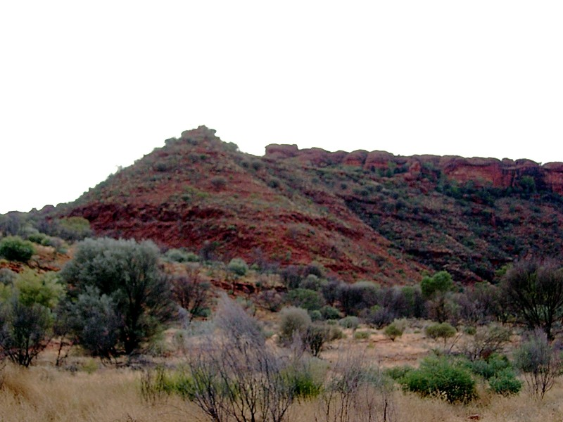
After a 5AM departure and a 2 1/2 hour bus trip, you arrive at Cardiac Hill, the way up the ridge. I dozed through the trip, opening my eyes whenever the bus slowed town, to see the kangaroo. Made it up the hill at the guide's brisk pace, althogh I felt a bit woozy for a few minutes after.
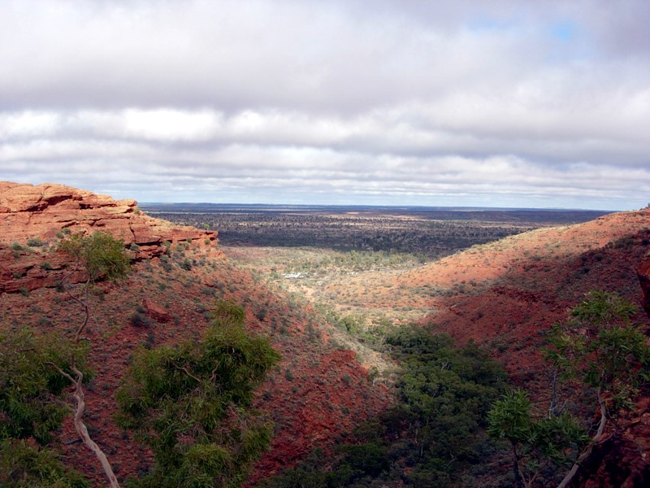
View from the top.
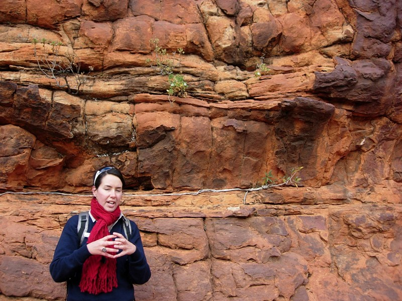
There's a layer of rock underneath the surface that includes lots of tiny silicate globules, and it holds water. The plant sinks a taproot into a pool. When that's exhausted, the runner root grows laterally and sinks another taproot.
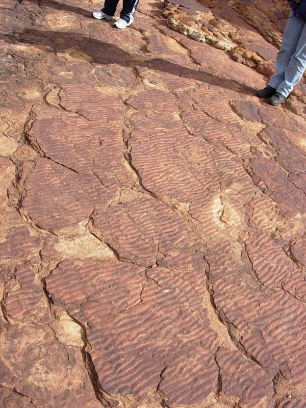
Fossilized mud ripples from a lake bed.
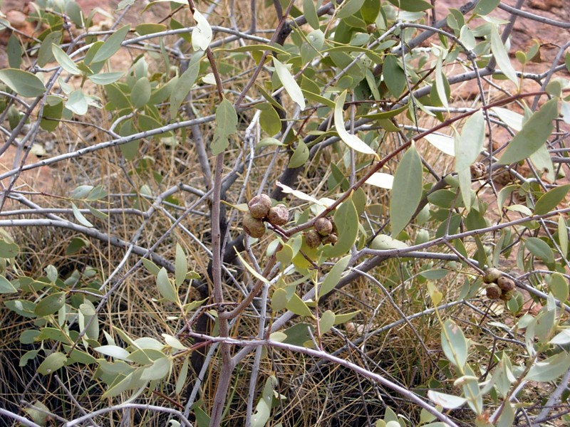
Desert plums. More bitter and higher in Vitamin C.
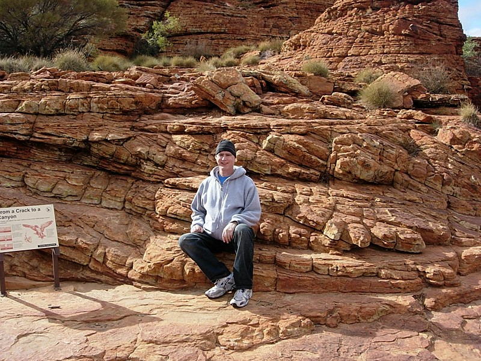
On the rocks.
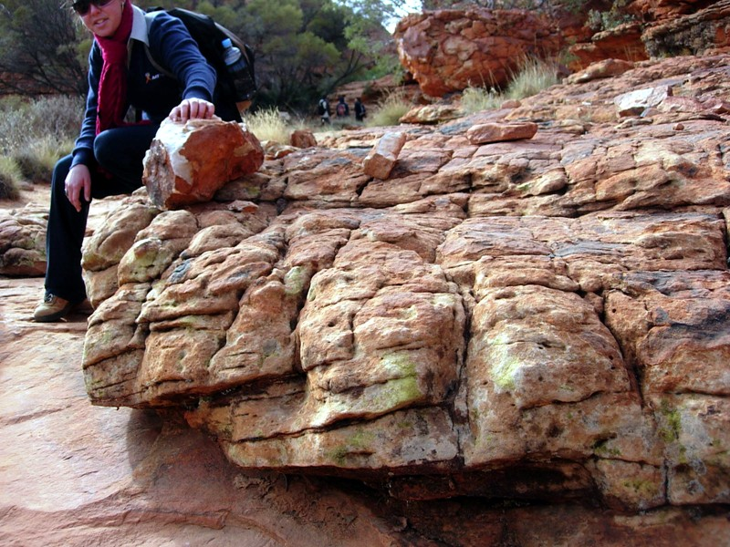
Looks like elemental sulfur; they're lichens.
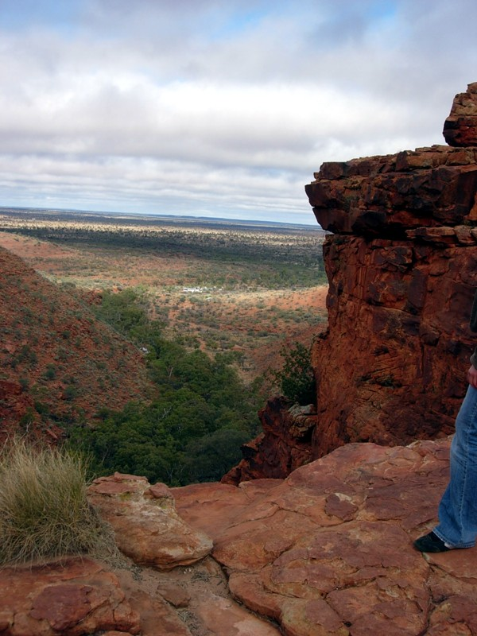
Darwin award: four people have lunged off this cliff after blown-away caps.
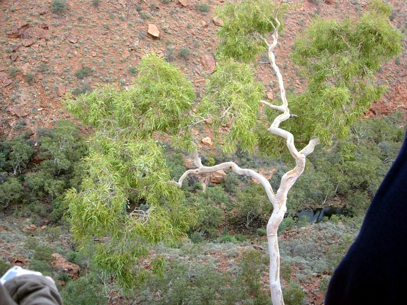
Ghost gum. The tree is used to make white face paint. It glows faintly in the dark--you can also paint your whole body and scare away intruders. The locals had that figured out before Doyle wrote Hound of the Baskervilles.
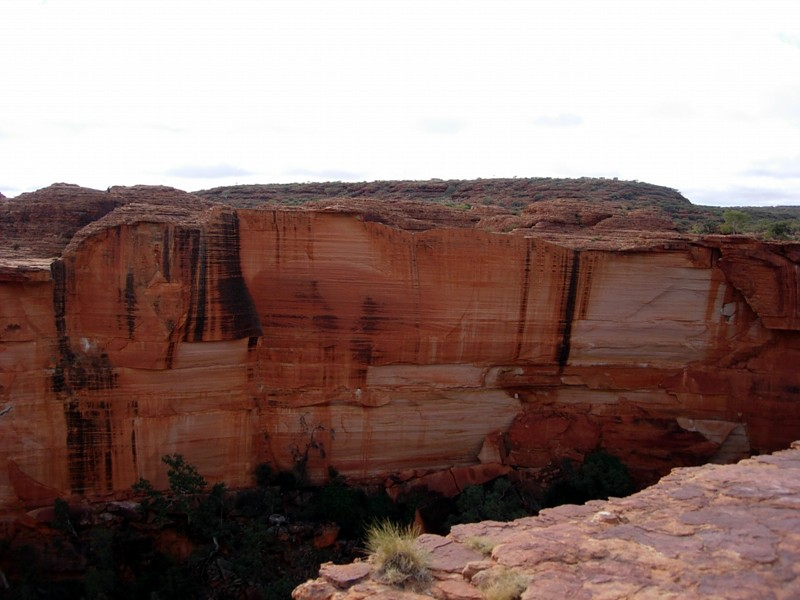
The cliff face sheared off 60 years ago.
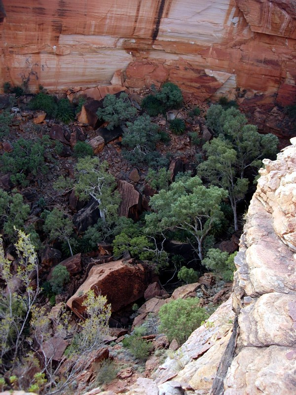
Boulders at the bottom.
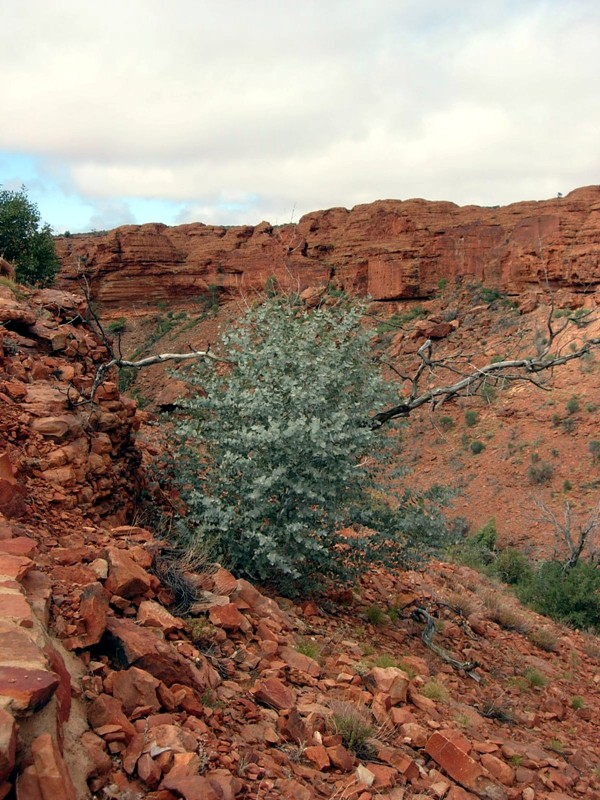
This fire-savy tree has its trunk underground. What you see is branches.
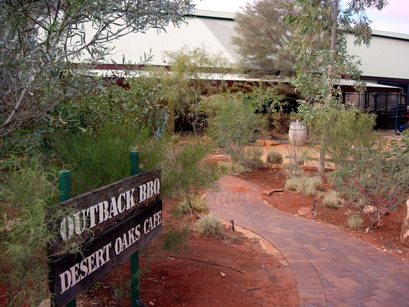
Truck stop where we ate lunch. If you want camel and allegator pizza, you'll have to come here. (I got the roast capsicum soup with bread.)
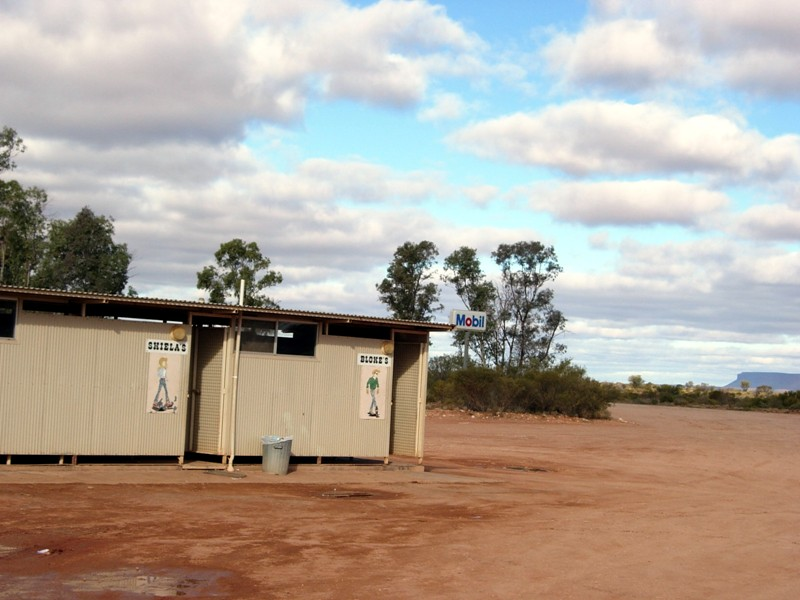
No comment.
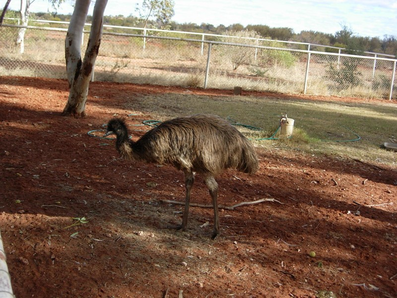
Tame emu
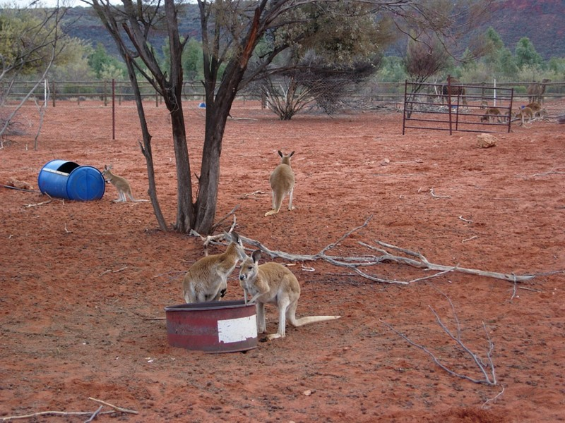
And roos. (Or maybe wallabies, these guys are really small.)
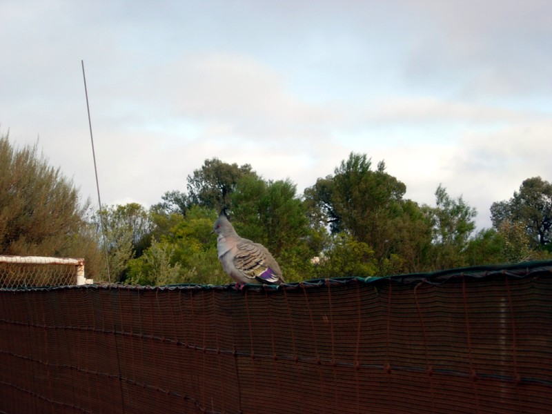
These birds were (like so many Australian birds) completely fearless regarding humans. They'd walk up to ask whatdja bring me?